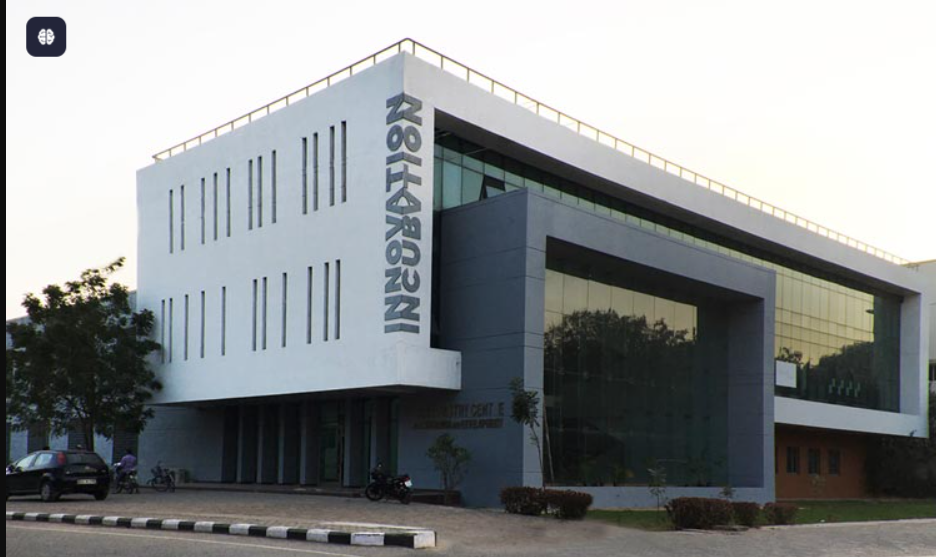
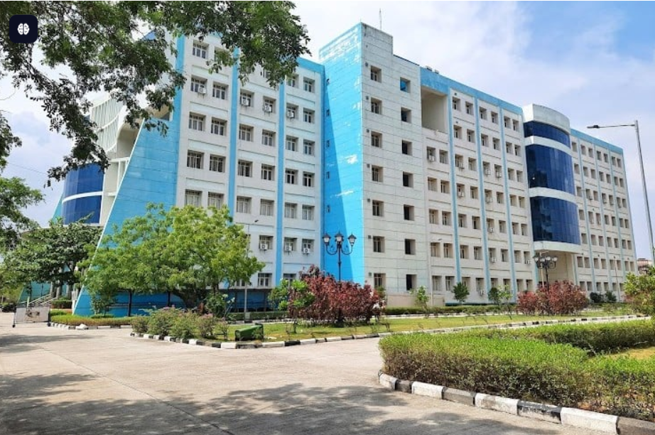

National Institute of Technology Warangal

An Institute of National Importance
NIT Warangal is recognized as an Institute of National Importance by the Government of India, and ranks among the top engineering institutes in the country. The campus features modern infrastructure with ongoing upgrades, and houses centers for innovation, incubation, and research, fostering start-up activity and industry collaboration. A vibrant student life is showcased, including major annual technical, cultural, and management events such as Technozion, SpringSpree, and CURA, drawing thousands of participants from across India.

NIT Warangal placements for the year 2025 have been strong and competitive with the following highlights:
The highest package offered was INR 64.3 Lakhs Per Annum (LPA).
The average package stood at INR 14.35 LPA with a median package of INR 12 LPA.
The overall placement rate was 79.3%, with 1201 students placed out of those who participated.
During the placement season, 290 companies visited the campus and made a total of 1225 offers.

The National Institute of Technology Warangal (NITW) is one of India’s premier technical and research universities established in 1959. It was the first among the chain of National Institutes of Technology and is recognized as an Institute of National Importance by the Government of India. Located on a sprawling 248-acre residential campus in Warangal, Telangana, NITW offers undergraduate, postgraduate, and doctoral programs across engineering, science, management, and humanities disciplines.
The institute is known for its experienced faculty, state-of-the-art infrastructure including a vast central library, modern labs, auditoriums, and extensive sports facilities. With over 6,000 students and 1,000 research scholars, NIT Warangal emphasizes innovation and entrepreneurship through dedicated centers like the Dr. VA Sastry Centre for Innovation and Incubation.
Ranked 21st among engineering institutes by NIRF 2024 and 53rd overall in India, NIT Warangal maintains a strong placement record with top recruiters such as Microsoft, Amazon, and Google. It is committed to academic excellence, research, and holistic student developmen